Salvador Dalí Exhibition
Editorial and Print Design
Following official branding guidelines, this brochure and print series uses cohesive colors and layouts to honor Dalí's specific aesthetic in graphic arts.
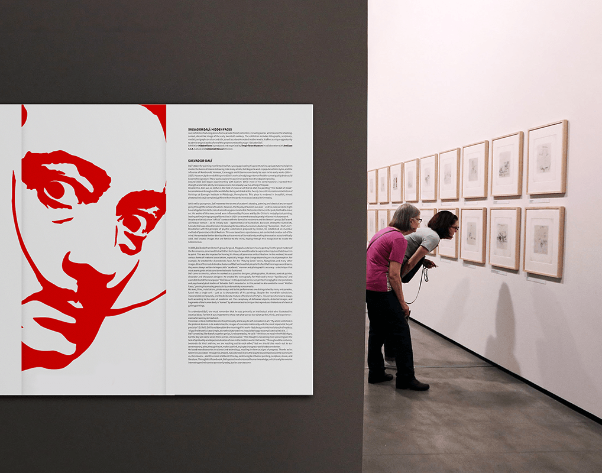
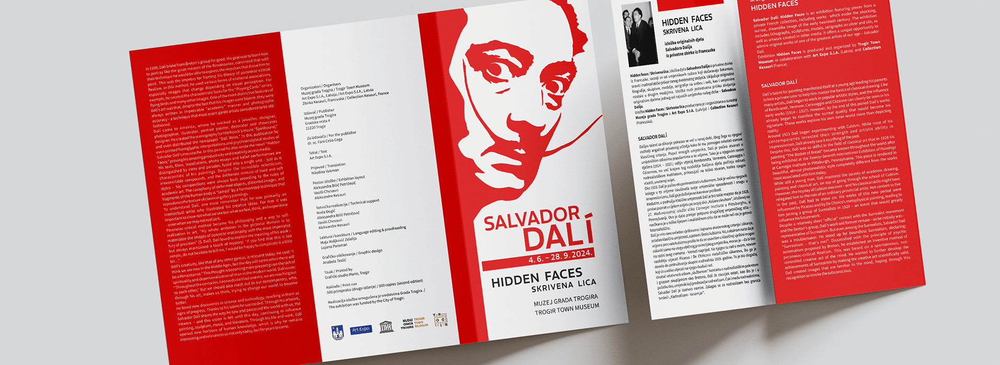
Editorial and Print Design
Following official branding guidelines, this brochure and print series uses cohesive colors and layouts to honor Dalí's specific aesthetic in graphic arts.


Catalogue and Print Design
An exhibition catalogue and print series featuring bold colors and strong pop art elements. The design uses high-energy visuals and vibrant layouts to reflect the distinct character of the artist's work.
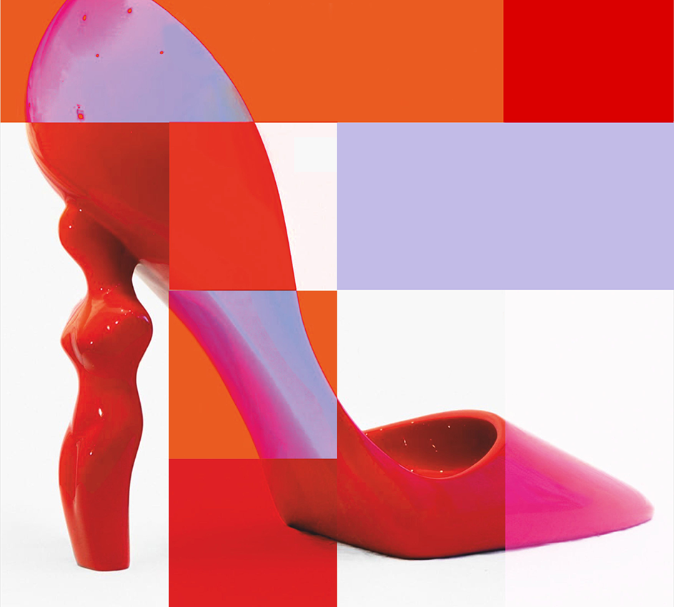
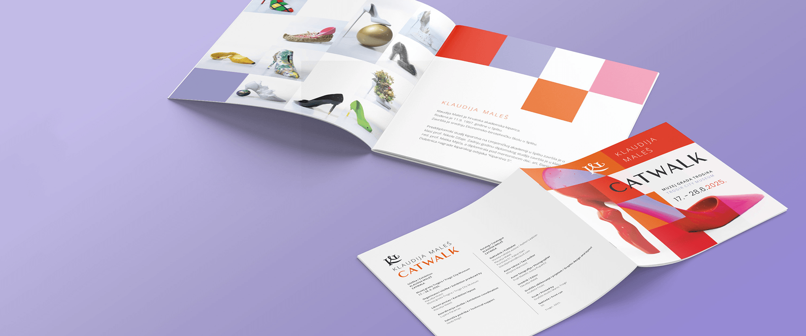
Brand Identity, Print and Environmental Design
Project covers the full brand identity, including 3D signage, custom objects, and various visual elements for the shop space. The design extends to a cohesive menu system highlighting the shop's high-quality coffee and diverse flavors.
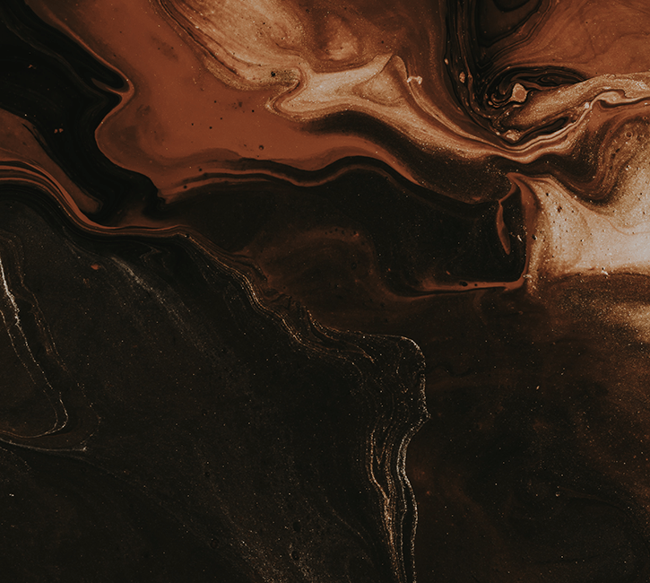
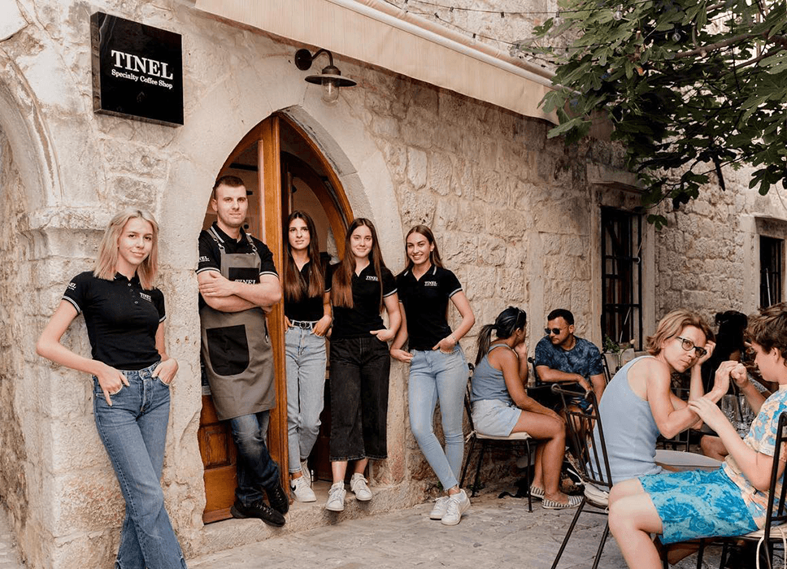
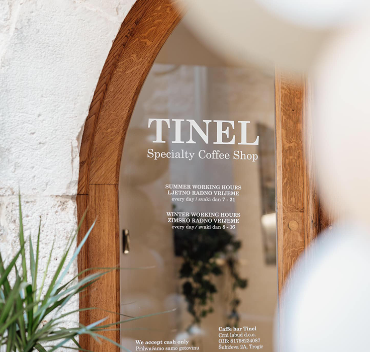
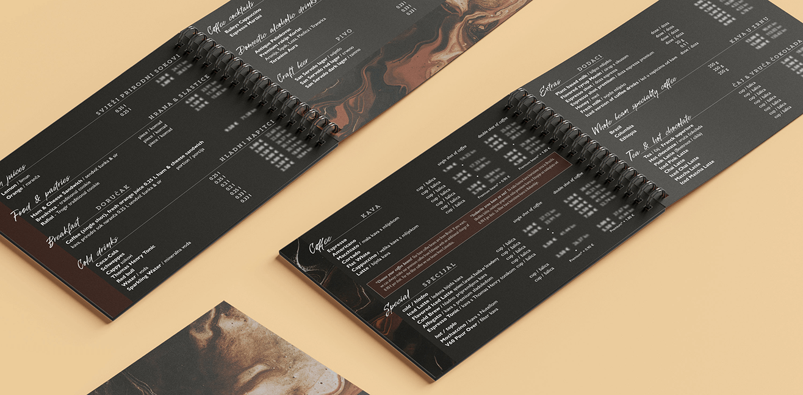
Brand Identity and Packaging
Inspired by the relief motifs of local historic architecture, this design connects the brand's natural ingredients to its roots. Using these traditional patterns to highlight a commitment to local production and quality.
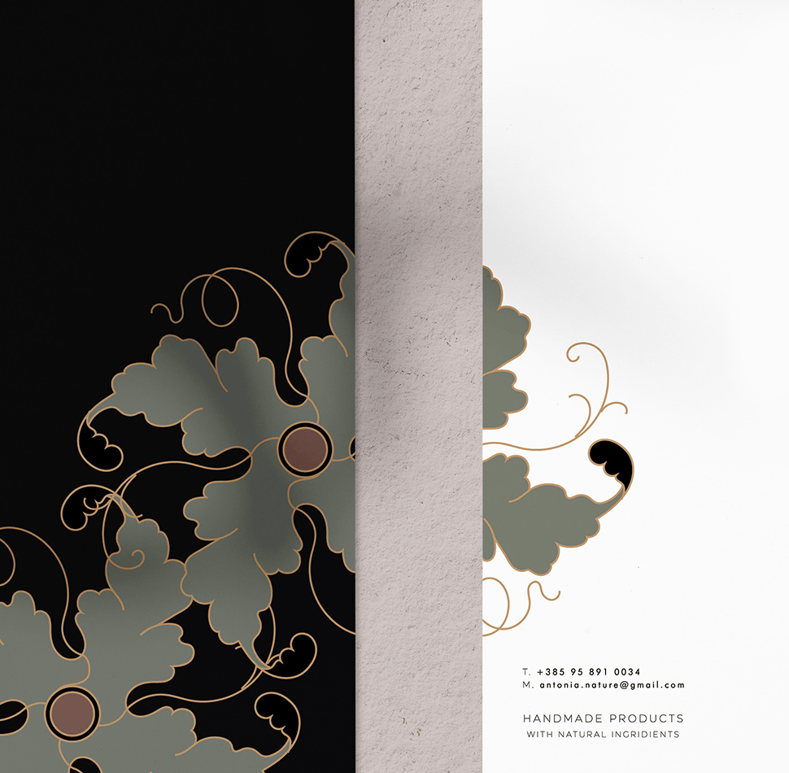
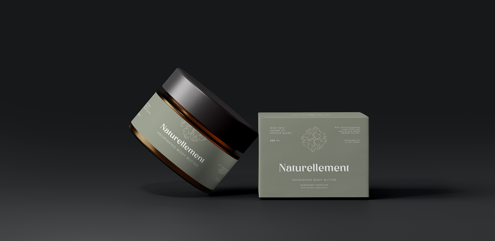
Illustration and Print Design
A series of illustrations and print materials designed for interactive children's workshops. The project focuses on creating engaging visuals that make history and art accessible and easy to learn through play.
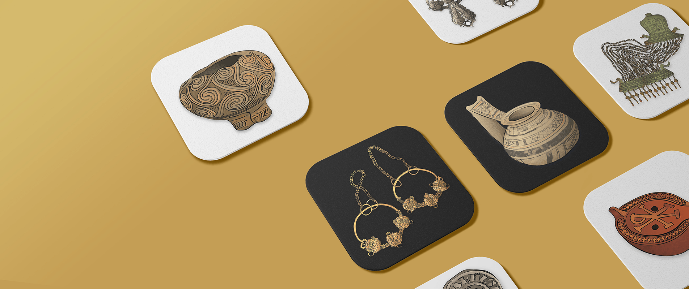
Brand Stationery and Print
Elegant card designs using symmetry to represent the balance of the spa. The branding emphasizes relaxation and premium service for an exclusive wellness experience.
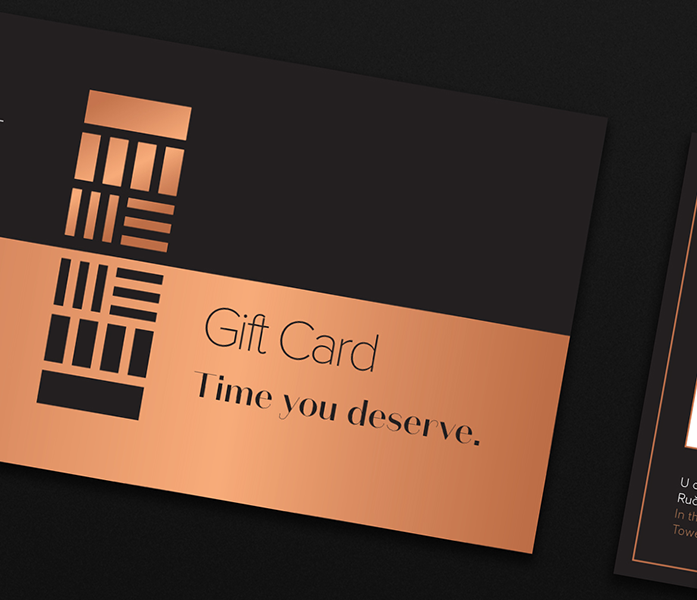
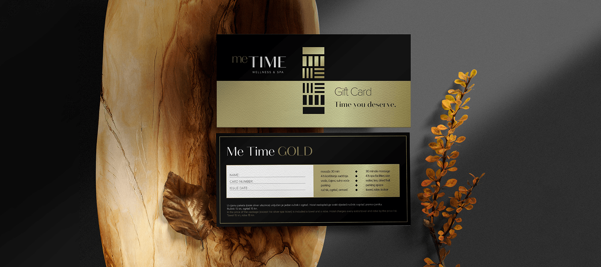
Print and Environmental Graphics
Print materials for luxury boat rentals and dynamic sports visuals for sailboat sails. The project ensures a cohesive, high-end identity across the company's diverse maritime sectors.
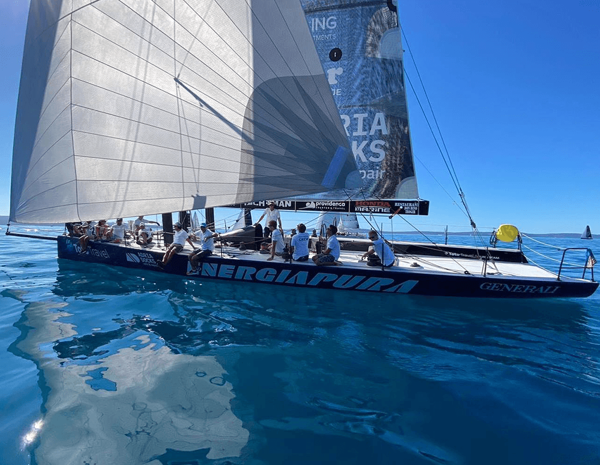
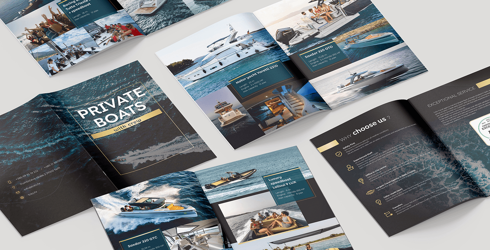